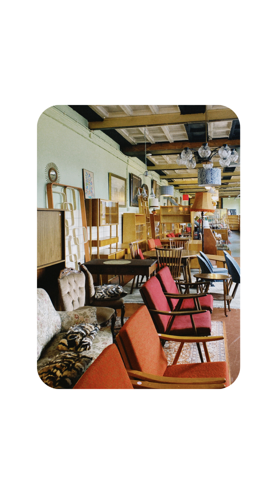
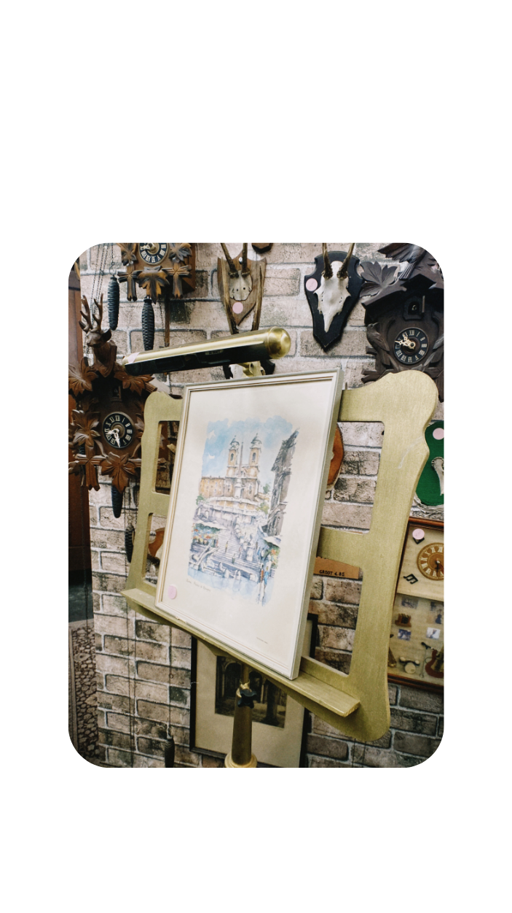
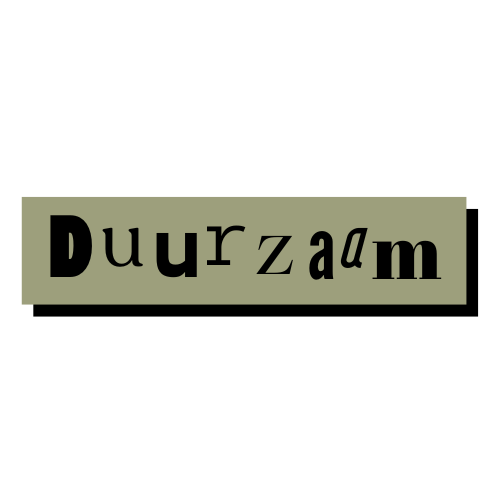
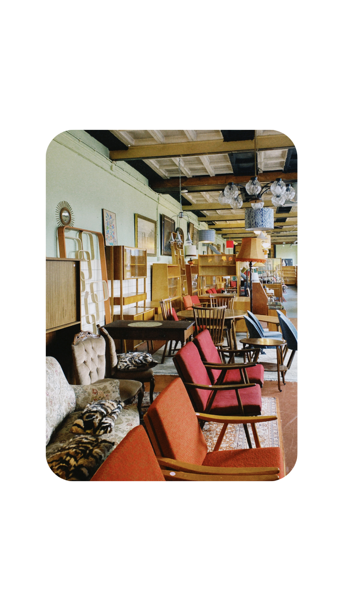
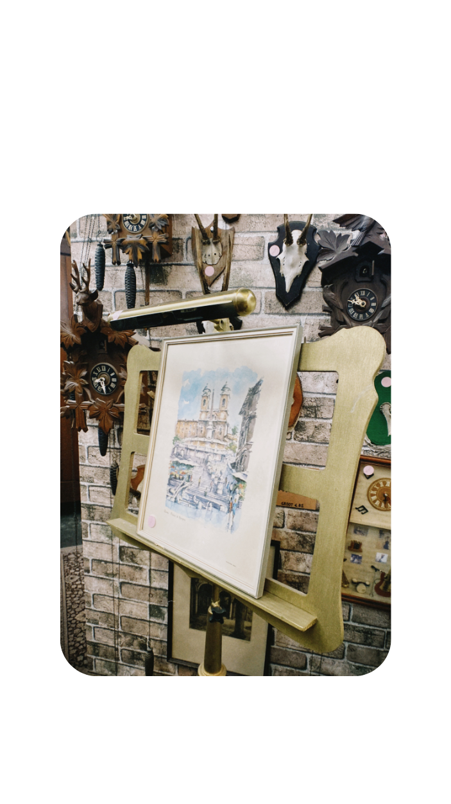
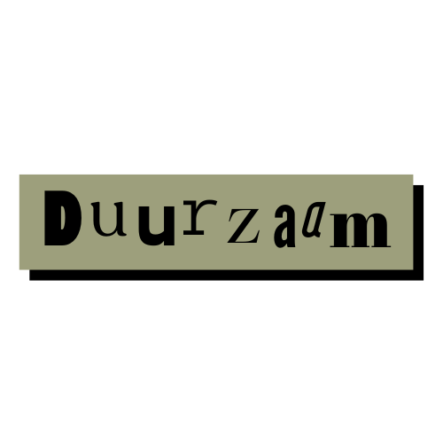

Door tweedehands meubels en spullen te verkopen, wordt er bijgedragen aan het verminderen van de vraag naar nieuwe productie. Het hergebruiken van meubels is daarom ook erg duurzaam. Het vermindert namelijk de noodzaak om nieuwe grondstoffen te winnen waarmee je nieuwe spullen maakt. Dit leidt tot een lagere ecologische voetafdruk.
Je verlengt de levensduur van een product door het opnieuw op de markt te brengen. Dit voorkomt ook dat ze vroegtijdig op de vuilnisbelt belanden. Dit minimaliseert afval.